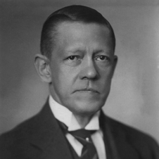

Gullstrand kallades 1894 till förste innehavare av professuren i oftalmiatrik vid Uppsala universitet, och 1914 inrättades där en personlig professur i fysikalisk och fysiologisk optik för honom. Genom sin doktorsavhandling Bidrag till astigmatismens teori (1890) inledde Gullstrand en serie teoretiska undersökningar av ögats optik. Dessa beskrevs i prisbelönade men svårlästa publikationer där han utnyttjade matematiska metoder för att lösa en rad problem inom geometrisk optik, vilket skapade bättre teoretiskt underlag för att förklara ljusbrytningen i ögat. Han bidrog också med tekniska förbättringar, bl.a. en reflexfri ögonspegel, och samarbetade med Zeissverken i Jena vid förbättrandet av mikroskop och glasögon. Av Karolinska Institutet erhöll Gullstrand 1911 års Nobelpris i fysiologi eller medicin för sitt arbete rörande ögats optik. Nobelkommittén för fysik vid Vetenskapsakademien hade samma år tänkt föreslå Gullstrand till Nobelpris i fysik, men han utsågs i stället till ledamot av Nobelkommittén för fysik, där han var ordförande 1923–27. Gullstrand intresserade sig bl.a. för Albert Einsteins allmänna relativitetsteori, men kom till slutsatsen att den var felaktig. Detta är en av orsakerna till att Einstein inte erhöll Nobelpris för relativitetsteorierna.
